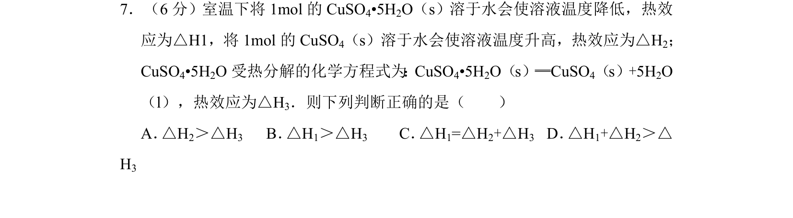
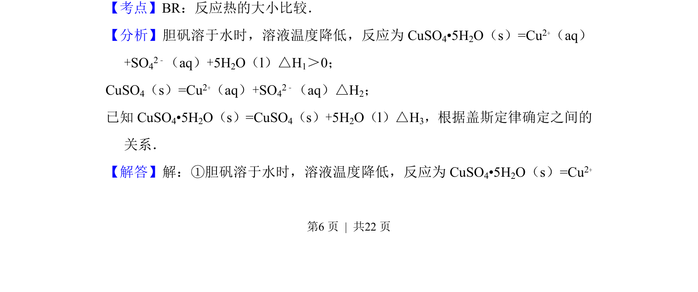
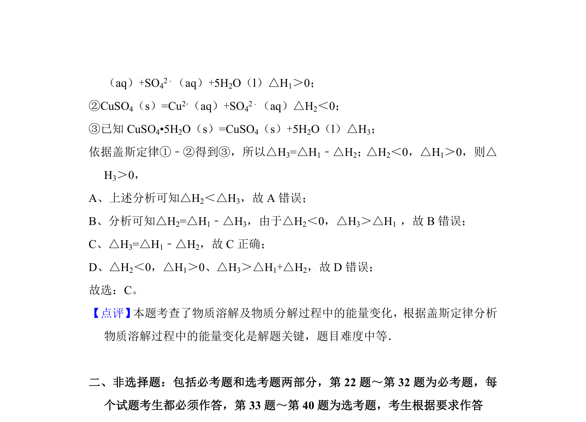

考点：反应热大小比较 盖斯定律

该题通过胆矾溶解、无水硫酸铜溶解及胆矾分解的热效应，利用盖斯定律比较反应热大小。


📄 原 PDF 第 6 页：
素材/真题/吉林/2008-2024·（吉林）化学高考真题/2014年高考化学试卷（新课标Ⅱ）（解析卷）.pdf
7．（6分）室温下将1mol的CuSO 4•5H2O（s）溶于水会使溶液温度降低，热效 应为△H1，将1mol的CuSO 4（s）溶于水会使溶液温度升高，热效应为△H2； CuSO4•5H2O受热分解的化学方程式为 ：CuSO4•5H2O（s）═CuSO4（s）+5H2O （l），热效应为△H3．则下列判断正确的是（ ） A． △H2＞△H3 B． △H1＞△H3 C． △H1=△H2+△H3 D． △H1+△H2＞△ H3
【考点】BR：反应热的大小比较．菁优网版权所有 【分析】胆矾溶于水时，溶液温度降低，反应为CuSO 4•5H2O（s）=Cu2+（aq） +SO42﹣（aq）+5H2O（l）△H1＞0； CuSO4（s）=Cu2+（aq）+SO42﹣（aq）△H2； 已知CuSO 4•5H2O（s）=CuSO4（s）+5H2O（l）△H3，根据盖斯定律确定之间的 关系． 【解答】解：①胆矾溶于水时，溶液温度降低，反应为CuSO 4•5H2O（s）=Cu2+